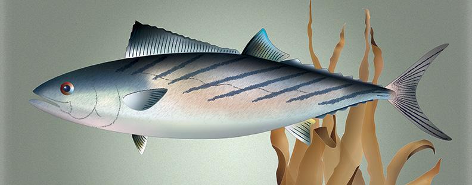

Graphic Designs
A collection of visual design projects exploring typography, color, composition, and visual storytelling. Each project reflects my ongoing journey to develop my skills and communicate ideas through thoughtful design.

A collection of visual design projects exploring typography, color, composition, and visual storytelling. Each project reflects my ongoing journey to develop my skills and communicate ideas through thoughtful design.
A collection of acrylic paintings exploring color relationships, shapes, textures, and visual balance. Through experimentation with different techniques, I continue to discover new ways to express ideas and emotions through traditional art.
This mobile UI/UX project explores the integration of visual design and user-centered principles to create a clear, intuitive interface. The design focuses on usability, information hierarchy, and interaction to support an effective and engaging mobile experience.
A collection of multimedia and audio projects exploring visual storytelling, motion, sound design, and musical composition. Featuring video productions paired with original scores alongside standalone electronic music pieces, these works explore creative possibilities through rhythm, atmosphere, moving images, and sound.